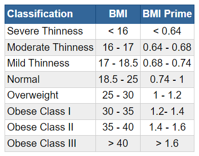
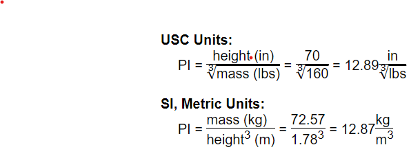

BMI introduction
BMI is a measurement of a person's leanness or corpulence based on their height and weight, and is intended to quantify tissue mass. It is widely used as a general indicator of whether a person has a healthy body weight for their height. Specifically, the value obtained from the calculation of BMI is used to categorize whether a person is underweight, normal weight, overweight, or obese depending on what range the value falls between. These ranges of BMI vary based on factors such as region and age, and are sometimes further divided into subcategories such as severely underweight or very severely obese. Being overweight or underweight can have significant health effects, so while BMI is an imperfect measure of healthy body weight, it is a useful indicator of whether any additional testing or action is required. Refer to the table below to see the different categories based on BMI that are used by the calculator.
BMI table for adults
This is the World Health Organization's (WHO) recommended body weight based on BMI values for adults. It is used for both men and women, age 20 or older.
BMI chart for adults
This is a graph of BMI categories based on the World Health Organization data. The dashed lines represent subdivisions within a major categorization.
BMI table for adults
This is the World Health Organization's (WHO) recommended body weight based on BMI values for adults. It is used for both men and women, age 20 or older.
Risks associated with being overweight
being overweight increases the risk of a number of serious diseases and health conditions. Below is a list of said risks, according to the Centers for Disease Control and Prevention (CDC):
Limitations of BMI
Although BMI is a widely used and useful indicator of healthy body weight, it does have its limitations. BMI is only an estimate that cannot take body composition into account. Due to a wide variety of body types as well as distribution of muscle, bone mass, and fat, BMI should be considered along with other measurements rather than being used as the sole method for determining a person's healthy body weight. In adults: BMI cannot be fully accurate because it is a measure of excess body weight, rather than excess body fat. BMI is further influenced by factors such as age, sex, ethnicity, muscle mass, body fat, and activity level, among others. For example, an older person who is considered a healthy weight, but is completely inactive in their daily life may have significant amounts of excess body fat even though they are not heavy. This would be considered unhealthy, while a younger person with higher muscle composition of the same BMI would be considered healthy. In athletes, particularly bodybuilders who would be considered overweight due to muscle being heavier than fat, it is entirely possible that they are actually at a healthy weight for their body composition. Generally, according to the CDC:
BMI formula
Below are the equations used for calculating BMI in the International System of Units (SI) and the US
customary system (USC) using a 5'10", 160-pound individual as an example:
USC Units:
BMI = 703 ×
mass (lbs)
height2 (in)
= 703 ×
160
702
= 22.96
kg
m2
SI, Metric Units:
BMI =
mass (kg)
height2 (m)
=
72.57
1.782
= 22.90
kg
m2
BMI Prime
BMI prime is the ratio of a person's measured BMI to the upper limit of BMI that is considered "normal,"
by
institutions such as the WHO and the CDC. Though it may differ in some countries, such as those in Asia,
this upper limit, which will be referred to as BMIupper is 25 kg/m2.
The BMI prime formula is:
BMI prime =
BMI/
25
Since BMI prime is a ratio of two BMI values, BMI prime is a dimensionless value. A person who has a BMI
prime less than 0.74 is classified as underweight; from 0.74 to 1 is classified as normal; greater than
1 is classified as overweight; and greater than 1.2 is classified as obese. The table below shows a
person's weight classification based on their BMI prime:

BMI prime allows us to make a quick assessment of how much a person's BMI differs from the upper limit of BMI that is considered normal. It also allows for comparisons between groups of people who have different upper BMI limits.
Ponderal Index The Ponderal Index (PI) is similar to BMI in that it measures the leanness or corpulence of a person based on their height and weight. The main difference between the PI and BMI is the cubing rather than squaring of the height in the formula (provided below). While BMI can be a useful tool when considering large populations, it is not reliable for determining leanness or corpulence in individuals. Although the PI suffers from similar considerations, the PI is more reliable for use with very tall or short individuals, while BMI tends to record uncharacteristically high or low body fat levels for those on the extreme ends of the height and weight spectrum. Below is the equation for computing the PI of an individual using USC, again using a 5'10", 160-pound individual as an example: 